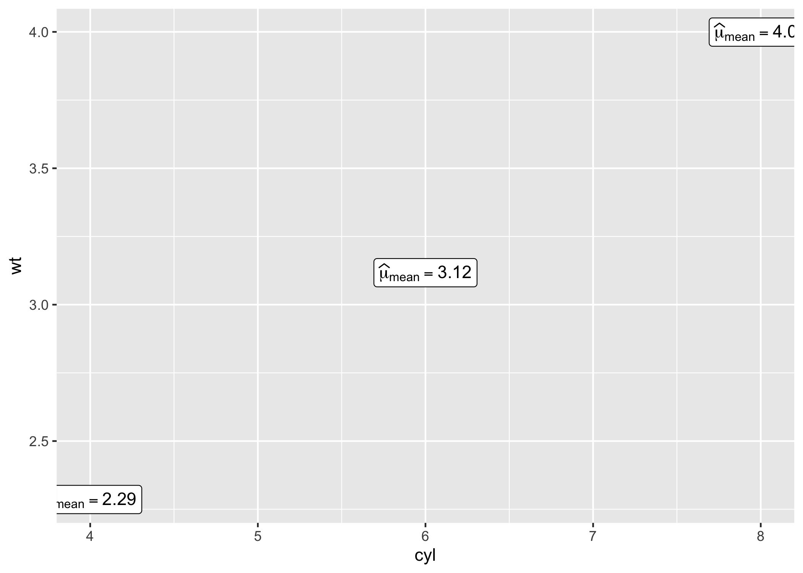
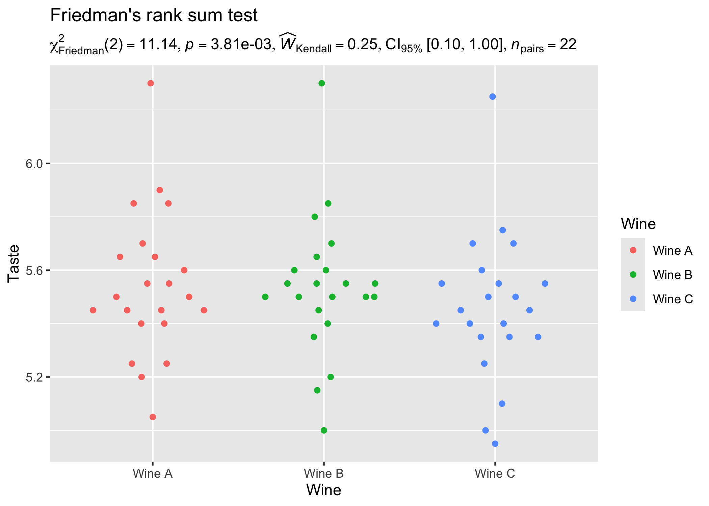
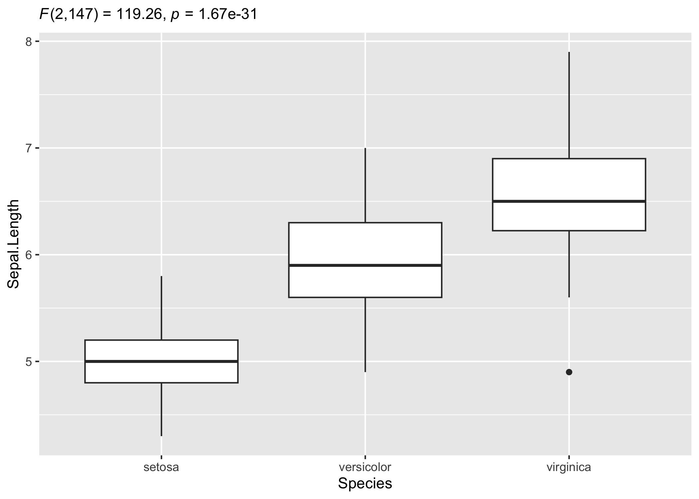

| Status | Usage | Miscellaneous |
|---|---|---|
 |
Introduction
The statsExpressions package has two key aims:
- to provide a consistent syntax to do statistical analysis with tidy data (in pipe-friendly manner),
- to provide statistical expressions (pre-formatted in-text statistical results) for plotting functions.
Statistical packages exhibit substantial diversity in terms of their syntax and expected input type. This can make it difficult to switch from one statistical approach to another. For example, some functions expect vectors as inputs, while others expect dataframes. Depending on whether it is a repeated measures design or not, different functions might expect data to be in wide or long format. Some functions can internally omit missing values, while other functions error in their presence. Furthermore, if someone wishes to utilize the objects returned by these packages downstream in their workflow, this is not straightforward either because even functions from the same package can return a list, a matrix, an array, a dataframe, etc., depending on the function.
This is where statsExpressions comes in: It can be thought of as a unified portal through which most of the functionality in these underlying packages can be accessed, with a simpler interface and no requirement to change data format.
Installation
| Type | Source | Command |
|---|---|---|
| Release | install.packages("statsExpressions") |
|
| Development |  |
remotes::install_github("IndrajeetPatil/statsExpressions") |
Citation
The package can be cited as:
citation("statsExpressions")
Patil, I., (2021). statsExpressions: R Package for Tidy Dataframes
and Expressions with Statistical Details. Journal of Open Source
Software, 6(61), 3236, https://doi.org/10.21105/joss.03236
A BibTeX entry for LaTeX users is
@Article{,
doi = {10.21105/joss.03236},
url = {https://doi.org/10.21105/joss.03236},
year = {2021},
publisher = {{The Open Journal}},
volume = {6},
number = {61},
pages = {3236},
author = {Indrajeet Patil},
title = {{statsExpressions: {R} Package for Tidy Dataframes and Expressions with Statistical Details}},
journal = {{Journal of Open Source Software}},
}
Summary of types of statistical analyses
Here is a tabular summary of available tests:
| Test | Function | Lifecycle |
|---|---|---|
| one-sample t-test | one_sample_test |
|
| two-sample t-test | two_sample_test |
|
| one-way ANOVA | oneway_anova |
|
| correlation analysis | corr_test |
|
| contingency table analysis | contingency_table |
|
| meta-analysis | meta_analysis |
The table below summarizes all the different types of analyses currently supported in this package-
| Description | Parametric | Non-parametric | Robust | Bayesian |
|---|---|---|---|---|
| Between group/condition comparisons | ✅ | ✅ | ✅ | ✅ |
| Within group/condition comparisons | ✅ | ✅ | ✅ | ✅ |
| Distribution of a numeric variable | ✅ | ✅ | ✅ | ✅ |
| Correlation between two variables | ✅ | ✅ | ✅ | ✅ |
| Association between categorical variables | ✅ | ✅ | ❌ | ✅ |
| Equal proportions for categorical variable levels | ✅ | ✅ | ❌ | ✅ |
| Random-effects meta-analysis | ✅ | ❌ | ✅ | ✅ |
Summary of Bayesian analysis
| Analysis | Hypothesis testing | Estimation |
|---|---|---|
| (one/two-sample) t-test | ✅ | ✅ |
| one-way ANOVA | ✅ | ✅ |
| correlation | ✅ | ✅ |
| (one/two-way) contingency table | ✅ | ✅ |
| random-effects meta-analysis | ✅ | ✅ |
Tidy dataframes from statistical analysis
To illustrate the simplicity of this syntax, let’s say we want to run a one-way ANOVA. If we first run a non-parametric ANOVA and then decide to run a robust ANOVA instead, the syntax remains the same and the statistical approach can be modified by changing a single argument:
library(statsExpressions)
mtcars %>% oneway_anova(cyl, wt, type = "nonparametric")
#> # A tibble: 1 x 15
#> parameter1 parameter2 statistic df.error p.value
#> <chr> <chr> <dbl> <int> <dbl>
#> 1 wt cyl 22.8 2 0.0000112
#> method effectsize estimate conf.level conf.low
#> <chr> <chr> <dbl> <dbl> <dbl>
#> 1 Kruskal-Wallis rank sum test Epsilon2 (rank) 0.736 0.95 0.624
#> conf.high conf.method conf.iterations n.obs expression
#> <dbl> <chr> <int> <int> <list>
#> 1 1 percentile bootstrap 100 32 <expression>
mtcars %>% oneway_anova(cyl, wt, type = "robust")
#> # A tibble: 1 x 12
#> statistic df df.error p.value
#> <dbl> <dbl> <dbl> <dbl>
#> 1 12.7 2 12.2 0.00102
#> method
#> <chr>
#> 1 A heteroscedastic one-way ANOVA for trimmed means
#> effectsize estimate conf.level conf.low conf.high
#> <chr> <dbl> <dbl> <dbl> <dbl>
#> 1 Explanatory measure of effect size 1.05 0.95 0.843 1.50
#> n.obs expression
#> <int> <list>
#> 1 32 <expression>All possible output dataframes from functions are tabulated here: https://indrajeetpatil.github.io/statsExpressions/articles/web_only/dataframe_outputs.html
Needless to say this will also work with the kable
function to generate a table:
# setup
library(statsExpressions)
set.seed(123)
# one-sample robust t-test
# we will leave `expression` column out; it's not needed for using only the dataframe
mtcars %>%
one_sample_test(wt, test.value = 3, type = "robust") %>%
dplyr::select(-expression) %>%
knitr::kable()| statistic | p.value | n.obs | method | effectsize | estimate | conf.level | conf.low | conf.high |
|---|---|---|---|---|---|---|---|---|
| 1.179181 | 0.275 | 32 | Bootstrap-t method for one-sample test | Trimmed mean | 3.197 | 0.95 | 2.854246 | 3.539754 |
These functions are also compatible with other popular data manipulation packages.
For example, let’s say we want to run a one-sample t-test
for all levels of a certain grouping variable. We can use
dplyr to do so:
# for reproducibility
set.seed(123)
library(dplyr)
# grouped operation
# running one-sample test for all levels of grouping variable `cyl`
mtcars %>%
group_by(cyl) %>%
group_modify(~ one_sample_test(.x, wt, test.value = 3), .keep = TRUE) %>%
ungroup()
#> # A tibble: 3 x 16
#> cyl mu statistic df.error p.value method alternative
#> <dbl> <dbl> <dbl> <dbl> <dbl> <chr> <chr>
#> 1 4 3 -4.16 10 0.00195 One Sample t-test two.sided
#> 2 6 3 0.870 6 0.418 One Sample t-test two.sided
#> 3 8 3 4.92 13 0.000278 One Sample t-test two.sided
#> effectsize estimate conf.level conf.low conf.high conf.method
#> <chr> <dbl> <dbl> <dbl> <dbl> <chr>
#> 1 Hedges' g -1.16 0.95 -1.97 -0.422 ncp
#> 2 Hedges' g 0.286 0.95 -0.419 1.01 ncp
#> 3 Hedges' g 1.24 0.95 0.565 1.98 ncp
#> conf.distribution n.obs expression
#> <chr> <int> <list>
#> 1 t 11 <expression>
#> 2 t 7 <expression>
#> 3 t 14 <expression>Using expressions in custom plots
Note that expression here means a pre-formatted
in-text statistical result. In addition to other details
contained in the dataframe, there is also a column titled
expression, which contains expression with statistical
details and can be displayed in a plot.
For all statistical test expressions, the default template attempt to follow the gold standard for statistical reporting.
For example, here are results from Welch’s t-test:

Expressions for centrality measure
library(ggplot2)
# displaying mean for each level of `cyl`
centrality_description(mtcars, cyl, wt) |>
ggplot(aes(cyl, wt)) +
geom_point() +
geom_label(aes(label = expression), parse = TRUE)
Here are a few examples for supported analyses.
Expressions for one-way ANOVAs
Between-subjects design
Let’s say we want to check differences in weight of the vehicle based on number of cylinders in the engine and wish to carry out robust trimmed-means ANOVA:
# setup
set.seed(123)
library(ggplot2)
library(statsExpressions)
library(ggridges)
# create a ridgeplot
ggplot(iris, aes(x = Sepal.Length, y = Species)) +
geom_density_ridges(
jittered_points = TRUE, quantile_lines = TRUE,
scale = 0.9, vline_size = 1, vline_color = "red",
position = position_raincloud(adjust_vlines = TRUE)
) + # use the expression in the dataframe to display results in the subtitle
labs(
title = "A heteroscedastic one-way ANOVA for trimmed means",
subtitle = oneway_anova(iris, Species, Sepal.Length, type = "robust")$expression[[1]]
)
Within-subjects design
Let’s now see an example of a repeated measures one-way ANOVA.
# setup
set.seed(123)
library(ggplot2)
library(WRS2)
library(ggbeeswarm)
library(statsExpressions)
ggplot2::ggplot(WineTasting, aes(Wine, Taste, color = Wine)) +
geom_quasirandom() +
labs(
title = "Friedman's rank sum test",
subtitle = oneway_anova(
WineTasting,
Wine,
Taste,
paired = TRUE,
subject.id = Taster,
type = "np"
)$expression[[1]]
)
Expressions for two-sample tests
Between-subjects design
# setup
set.seed(123)
library(ggplot2)
library(gghalves)
library(ggbeeswarm)
library(hrbrthemes)
# create a plot
ggplot(ToothGrowth, aes(supp, len)) +
geom_half_boxplot() +
geom_beeswarm() +
theme_ipsum_rc() +
# adding a subtitle with
labs(
title = "Two-Sample Welch's t-test",
subtitle = two_sample_test(ToothGrowth, supp, len)$expression[[1]]
)
Within-subjects design
We can also have a look at a repeated measures design and the related expressions.
# setup
set.seed(123)
library(ggplot2)
library(tidyr)
library(PairedData)
data(PrisonStress)
# get data in tidy format
df <- pivot_longer(PrisonStress, starts_with("PSS"), "PSS", values_to = "stress")
# plot
paired.plotProfiles(PrisonStress, "PSSbefore", "PSSafter", subjects = "Subject") +
labs(
title = "Two-sample Wilcoxon paired test",
subtitle = two_sample_test(
data = df,
x = PSS,
y = stress,
paired = TRUE,
subject.id = Subject,
type = "np"
)$expression[[1]]
)
Expressions for one-sample tests
# setup
set.seed(123)
library(ggplot2)
# dataframe with results
df_results <- one_sample_test(mtcars, wt, test.value = 3, type = "bayes",
top.text = "Bayesian one-sample t-test")
# creating a histogram plot
ggplot(mtcars, aes(wt)) +
geom_histogram(alpha = 0.5) +
geom_vline(xintercept = mean(mtcars$wt), color = "red") +
labs(
subtitle = df_results$expression[[1]]
)
Expressions for correlation analysis
Let’s look at another example where we want to run correlation analysis:
# setup
set.seed(123)
library(ggplot2)
# create a scatter plot
ggplot(mtcars, aes(mpg, wt)) +
geom_point() +
geom_smooth(method = "lm", formula = y ~ x) +
labs(
title = "Spearman's rank correlation coefficient",
subtitle = corr_test(mtcars, mpg, wt, type = "nonparametric")$expression[[1]]
)
Expressions for contingency table analysis
For categorical/nominal data - one-sample:
# setup
set.seed(123)
library(ggplot2)
df_results <- contingency_table(as.data.frame(table(mpg$class)),
Var1,
counts = Freq,
type = "bayes",
top.text = "One-sample goodness-of-fit test"
)
# basic pie chart
ggplot(as.data.frame(table(mpg$class)), aes(x = "", y = Freq, fill = factor(Var1))) +
geom_bar(width = 1, stat = "identity") +
theme(axis.line = element_blank()) +
# cleaning up the chart and adding results from one-sample proportion test
coord_polar(theta = "y", start = 0) +
labs(
fill = "Class",
x = NULL,
y = NULL,
title = "Pie Chart of class (type of car)",
caption = df_results$expression[[1]]
)
You can also use these function to get the expression in return without having to display them in plots:
# setup
set.seed(123)
library(ggplot2)
# Pearson's chi-squared test of independence
contingency_table(mtcars, am, cyl)$expression[[1]]
#> expression(list(chi["Pearson"]^2 * "(" * 2 * ")" == "8.74", italic(p) ==
#> "0.01", widehat(italic("V"))["Cramer"] == "0.46", CI["95%"] ~
#> "[" * "0.00", "1.00" * "]", italic("n")["obs"] == "32"))Expressions for meta-analysis
# setup
set.seed(123)
library(metaviz)
library(ggplot2)
library(metaplus)
# meta-analysis forest plot with results random-effects meta-analysis
viz_forest(
x = mozart[, c("d", "se")],
study_labels = mozart[, "study_name"],
xlab = "Cohen's d",
variant = "thick",
type = "cumulative"
) + # use `{statsExpressions}` to create expression containing results
labs(
title = "Meta-analysis of Pietschnig, Voracek, and Formann (2010) on the Mozart effect",
subtitle = meta_analysis(dplyr::rename(mozart, estimate = d, std.error = se))$expression[[1]]
) +
theme(text = element_text(size = 12))
Customizing details to your liking
Sometimes you may not wish include so many details in the subtitle. In that case, you can extract the expression and copy-paste only the part you wish to include. For example, here only statistic and p-values are included:
# setup
set.seed(123)
library(ggplot2)
# extracting detailed expression
(res_expr <- oneway_anova(iris, Species, Sepal.Length, var.equal = TRUE)$expression[[1]])
#> expression(list(italic("F")["Fisher"](2, 147) == "119.26", italic(p) ==
#> "1.67e-31", widehat(omega["p"]^2) == "0.61", CI["95%"] ~
#> "[" * "0.53", "1.00" * "]", italic("n")["obs"] == "150"))
# adapting the details to your liking
ggplot(iris, aes(x = Species, y = Sepal.Length)) +
geom_boxplot() +
labs(subtitle = ggplot2::expr(paste(
NULL, italic("F"), "(", "2",
",", "147", ") = ", "119.26", ", ",
italic("p"), " = ", "1.67e-31"
)))
Summary of tests and effect sizes
Here a go-to summary about statistical test carried out and the
returned effect size for each function is provided. This should be
useful if one needs to find out more information about how an argument
is resolved in the underlying package or if one wishes to browse the
source code. So, for example, if you want to know more about how one-way
(between-subjects) ANOVA, you can run ?stats::oneway.test
in your R console.
centrality_description
| Type | Measure | Function used |
|---|---|---|
| Parametric | mean | parameters::describe_distribution |
| Non-parametric | median | parameters::describe_distribution |
| Robust | trimmed mean | parameters::describe_distribution |
| Bayesian | MAP (maximum a posteriori probability) estimate | parameters::describe_distribution |
two_sample_test + oneway_anova
No. of groups: 2 => two_sample_test
No. of groups: > 2 => oneway_anova
between-subjects
Hypothesis testing
| Type | No. of groups | Test | Function used |
|---|---|---|---|
| Parametric | > 2 | Fisher’s or Welch’s one-way ANOVA | stats::oneway.test |
| Non-parametric | > 2 | Kruskal–Wallis one-way ANOVA | stats::kruskal.test |
| Robust | > 2 | Heteroscedastic one-way ANOVA for trimmed means | WRS2::t1way |
| Bayes Factor | > 2 | Fisher’s ANOVA | BayesFactor::anovaBF |
| Parametric | 2 | Student’s or Welch’s t-test | stats::t.test |
| Non-parametric | 2 | Mann–Whitney U test | stats::wilcox.test |
| Robust | 2 | Yuen’s test for trimmed means | WRS2::yuen |
| Bayesian | 2 | Student’s t-test | BayesFactor::ttestBF |
Effect size estimation
| Type | No. of groups | Effect size | CI? | Function used |
|---|---|---|---|---|
| Parametric | > 2 |
|
✅ |
effectsize::omega_squared,
effectsize::eta_squared
|
| Non-parametric | > 2 | ✅ | effectsize::rank_epsilon_squared |
|
| Robust | > 2 |
|
✅ | WRS2::t1way |
| Bayes Factor | > 2 | ✅ | performance::r2_bayes |
|
| Parametric | 2 | Cohen’s d, Hedge’s g | ✅ |
effectsize::cohens_d,
effectsize::hedges_g
|
| Non-parametric | 2 | r (rank-biserial correlation) | ✅ | effectsize::rank_biserial |
| Robust | 2 |
|
✅ | WRS2::akp.effect |
| Bayesian | 2 | ✅ | bayestestR::describe_posterior |
within-subjects
Hypothesis testing
| Type | No. of groups | Test | Function used |
|---|---|---|---|
| Parametric | > 2 | One-way repeated measures ANOVA | afex::aov_ez |
| Non-parametric | > 2 | Friedman rank sum test | stats::friedman.test |
| Robust | > 2 | Heteroscedastic one-way repeated measures ANOVA for trimmed means | WRS2::rmanova |
| Bayes Factor | > 2 | One-way repeated measures ANOVA | BayesFactor::anovaBF |
| Parametric | 2 | Student’s t-test | stats::t.test |
| Non-parametric | 2 | Wilcoxon signed-rank test | stats::wilcox.test |
| Robust | 2 | Yuen’s test on trimmed means for dependent samples | WRS2::yuend |
| Bayesian | 2 | Student’s t-test | BayesFactor::ttestBF |
Effect size estimation
| Type | No. of groups | Effect size | CI? | Function used |
|---|---|---|---|---|
| Parametric | > 2 |
|
✅ |
effectsize::omega_squared,
effectsize::eta_squared
|
| Non-parametric | > 2 |
|
✅ | effectsize::kendalls_w |
| Robust | > 2 |
|
✅ | WRS2::wmcpAKP |
| Bayes Factor | > 2 | ✅ | performance::r2_bayes |
|
| Parametric | 2 | Cohen’s d, Hedge’s g | ✅ |
effectsize::cohens_d,
effectsize::hedges_g
|
| Non-parametric | 2 | r (rank-biserial correlation) | ✅ | effectsize::rank_biserial |
| Robust | 2 |
|
✅ | WRS2::wmcpAKP |
| Bayesian | 2 | ✅ | bayestestR::describe_posterior |
one_sample_test
Hypothesis testing
| Type | Test | Function used |
|---|---|---|
| Parametric | One-sample Student’s t-test | stats::t.test |
| Non-parametric | One-sample Wilcoxon test | stats::wilcox.test |
| Robust | Bootstrap-t method for one-sample test | WRS2::trimcibt |
| Bayesian | One-sample Student’s t-test | BayesFactor::ttestBF |
Effect size estimation
| Type | Effect size | CI? | Function used |
|---|---|---|---|
| Parametric | Cohen’s d, Hedge’s g | ✅ |
effectsize::cohens_d,
effectsize::hedges_g
|
| Non-parametric | r (rank-biserial correlation) | ✅ | effectsize::rank_biserial |
| Robust | trimmed mean | ✅ |
trimcibt (custom) |
| Bayes Factor | ✅ | bayestestR::describe_posterior |
corr_test
Hypothesis testing and Effect size estimation
| Type | Test | CI? | Function used |
|---|---|---|---|
| Parametric | Pearson’s correlation coefficient | ✅ | correlation::correlation |
| Non-parametric | Spearman’s rank correlation coefficient | ✅ | correlation::correlation |
| Robust | Winsorized Pearson correlation coefficient | ✅ | correlation::correlation |
| Bayesian | Pearson’s correlation coefficient | ✅ | correlation::correlation |
contingency_table
two-way table
Hypothesis testing
| Type | Design | Test | Function used |
|---|---|---|---|
| Parametric/Non-parametric | Unpaired | Pearson’s |
stats::chisq.test |
| Bayesian | Unpaired | Bayesian Pearson’s |
BayesFactor::contingencyTableBF |
| Parametric/Non-parametric | Paired | McNemar’s |
stats::mcnemar.test |
| Bayesian | Paired | ❌ | ❌ |
Effect size estimation
| Type | Design | Effect size | CI? | Function used |
|---|---|---|---|---|
| Parametric/Non-parametric | Unpaired | Cramer’s |
✅ | effectsize::cramers_v |
| Bayesian | Unpaired | Cramer’s |
✅ | effectsize::cramers_v |
| Parametric/Non-parametric | Paired | Cohen’s |
✅ | effectsize::cohens_g |
| Bayesian | Paired | ❌ | ❌ | ❌ |
one-way table
Hypothesis testing
| Type | Test | Function used |
|---|---|---|
| Parametric/Non-parametric | Goodness of fit |
stats::chisq.test |
| Bayesian | Bayesian Goodness of fit |
(custom) |
Effect size estimation
| Type | Effect size | CI? | Function used |
|---|---|---|---|
| Parametric/Non-parametric | Pearson’s |
✅ | effectsize::pearsons_c |
| Bayesian | ❌ | ❌ | ❌ |
meta_analysis
Hypothesis testing and Effect size estimation
| Type | Test | Effect size | CI? | Function used |
|---|---|---|---|---|
| Parametric | Meta-analysis via random-effects models | ✅ | metafor::metafor |
|
| Robust | Meta-analysis via robust random-effects models | ✅ | metaplus::metaplus |
|
| Bayes | Meta-analysis via Bayesian random-effects models | ✅ | metaBMA::meta_random |
Usage in ggstatsplot
Note that these functions were initially written to display results
from statistical tests on ready-made ggplot2 plots
implemented in ggstatsplot.
For detailed documentation, see the package website: https://indrajeetpatil.github.io/ggstatsplot/
Here is an example from ggstatsplot of what the plots
look like when the expressions are displayed in the subtitle-

Acknowledgments
The hexsticker and the schematic illustration of general workflow were generously designed by Sarah Otterstetter (Max Planck Institute for Human Development, Berlin).
Contributing
I’m happy to receive bug reports, suggestions, questions, and (most
of all) contributions to fix problems and add features. I personally
prefer using the GitHub issues system over trying to reach
out to me in other ways (personal e-mail, Twitter, etc.). Pull Requests
for contributions are encouraged.
Here are some simple ways in which you can contribute (in the increasing order of commitment):
Read and correct any inconsistencies in the documentation
Raise issues about bugs or wanted features
Review code
Add new functionality (in the form of new plotting functions or helpers for preparing subtitles)
Please note that this project is released with a Contributor Code of Conduct. By participating in this project you agree to abide by its terms.